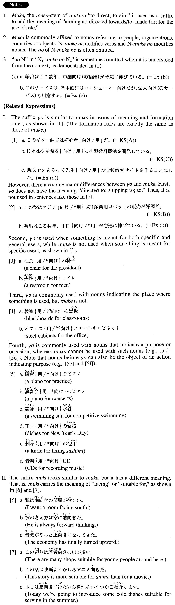

←
DoJG
→
向け
(A. 291)
Example sentences
(ksa).
このギター曲集は初心者
向け
だ。
This collection of guitar pieces is for beginners.
(ksb).
この秋はアジア
向け
（の）産業用ロボットの販売が好調だ。
This autumn, sales of industrial robots for Asia have been good.
(ksc).
D社は携帯機器
向け
に小型燃料電池を開発している。
D Company is developing small fuel-cell batteries for portable devices.
(a).
このセミナーはこれから株を始める人
向け
だ。
This seminar is for those who are going to begin (investing in) stocks.
(b).
輸出はここ数年、中国
向け
が急速に伸びている。
Regarding exports, for the last few years those to China have been increasing rapidly.
(c).
このセービスは、基本的にはコンシューマー
向け
だが、法人
向け
も用意する。
This service is basically for consumers, but we will offer a version for companies, too.
(d).
助成金をもらって先生
向け
の情報教育サイトを作ることにした。
We've decided to get a grant and develop a website to educate teachers about information technology.
(e).
このショールームでは住宅
向け
のタイル・健在を展示しております。
In this showroom, we are displaying tile and construction materials for residential use.
(f).
アメリカ進出を考える場合は、アメリカ
向け
の読みやすい商品説明書と価格表を用意することが必須です。
When you consider expanding to America, it is essential to prepare an easy-to-read product manual geared toward the U.S. and a price list.
(g).
K社は近々地図サービスと地域情報検索を国内
向け
に開始すると発表した。
K Company announced that it would begin a map service and (release) a search (engine) for local information for domestic users soon.
(h).
代表的な曲を小さなお子様
向け
にアレンジしました。
We arranged well-known (music) pieces for young children.
(i).
このオペレーティングシステムは、巨大なアプリケーション
向け
に設計されている。
This operating system is designed for mega-scale applications.
Formation
(i)
Noun
向け
だ
デパート
向け
だ
Something is for department stores
(ii)
Noun
1
向け
(の)Noun
2
ヨーロッパ
向け
(の)輸出
Exports to Europe
(iii)
Noun
向け
に
日本人
向け
に
For Japanese people
